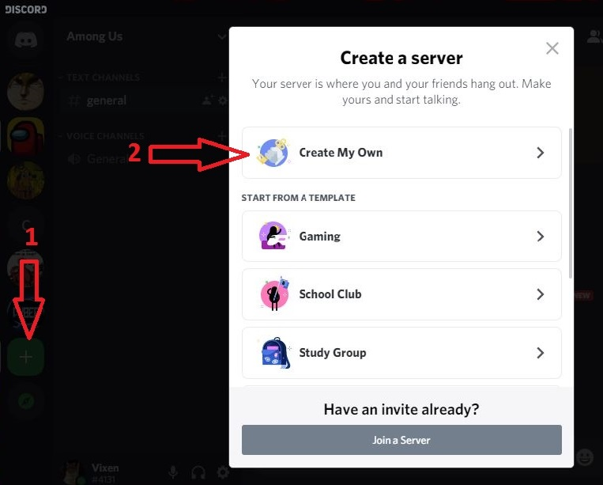
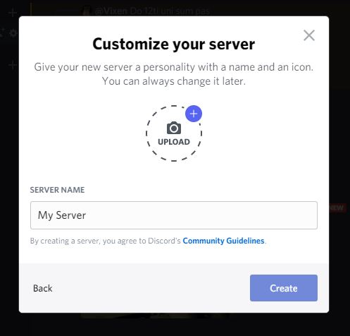

How to Make a Server
Here you will learn how to make your server.
To make a server, you need to have a Discord account first.
Making your own server allows you to add people who share similar interests as you. It also makes communication between large groups of people easier.
- Click on the "+" button, located in the left sidebar of the application.
- Select the option Create My Own. 
- Select Option For me and my friends
- Input a name for your server.
- Click on Create. 
You have now created your own server.